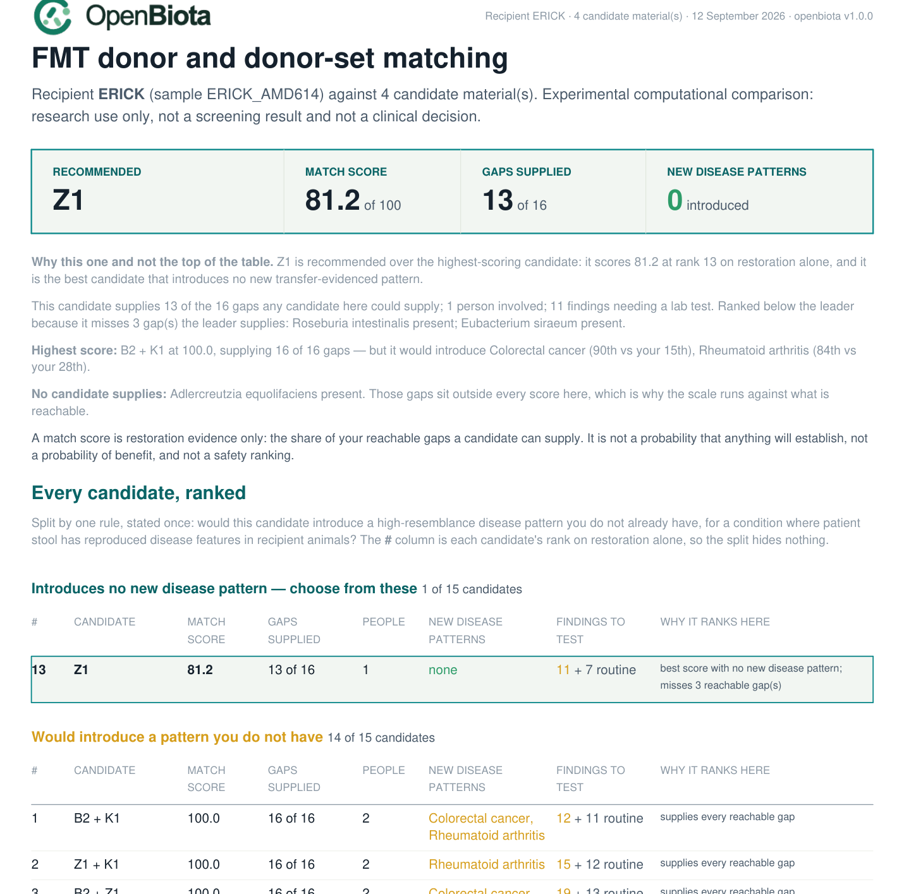

Research tool
FMT donor matching¶
openbiota fmt match compares one recipient against any number of candidate
donor materials, evaluates combinations of donors for complementary
restoration potential, and writes a report that separates what was measured
from what was predicted, simulated or left unresolved.
What this command is not
It is an experimental computational comparison. It does not screen a
donor, clear a donor, predict clinical benefit, or produce preparation,
mixing, dosing or administration instructions. There is deliberately no
safe field, no clearance probability and no "approved for FMT" state
anywhere in the output. Whether any material is ever used is a decision
for a responsible clinical or research programme with validated
laboratory screening — not for this software.
Run it¶
openbiota fmt match \
--recipient results/SAMPLE2_A02 \
--donor SAMPLE3=results/SAMPLE3_A03 \
--donor SAMPLE4=results/SAMPLE4_A04 \
--donor SAMPLE6=results/SAMPLE6_A06 \
--donor SAMPLE1=results/SAMPLE1_A01 \
--indication longcovid \
--out results/fmt_SAMPLE2_vs_4donors
Every input is a sample output directory from openbiota run. The command
reads the native results.json of each one; it never needs the network, and
it never reprocesses reads.
Outputs land in --out: match.json (canonical), match.html, match.pdf
and provenance.json. The HTML and PDF read the JSON only, so the three can
never disagree.
| Subcommand | What it does |
|---|---|
fmt match |
run a comparison and write the reports |
fmt inspect --manifest req.json |
validate a request and list what would be used |
fmt explain --run DIR --candidate SAMPLE4+SAMPLE6 |
what one candidate uniquely supplies |
fmt validate --run DIR |
check a completed run's integrity |
fmt models list |
capability and model-artifact status |
Useful flags: --max-donors-per-set, --max-materials-per-set,
--max-subsets, --goals FILE, --screening-manifest FILE, --formats,
--objective, --seed.
What the report looks like¶
The first page is a leaderboard: the recommended candidate, then every other candidate ranked, then a definition of each column — so "which donor is the best match" has exactly one answer and the reason for the order is on the same page.

Why the recommendation is not simply the top score¶
The highest-scoring candidate is not always the one the report recommends, and the gap between those two answers is the point of this section.
A match score measures restoration: how much of what the recipient is missing a candidate can supply. It says nothing about what a candidate would add. For most donor differences that is fine — a resemblance percentile is not a diagnosis, and a gut community is not a transmissible disease.
But for a small set of conditions, that dismissal does not hold up. Stool from patients has been put into animals and reproduced disease features against healthy-donor controls. Colorectal cancer is the clearest case, with four independent studies: promotion of intestinal carcinogenesis, accelerated adenoma progression and oncogenic epigenetic signatures. A candidate at the 90th percentile of that pattern, offered to a recipient at the 15th, is a different proposition from one that merely shares a pattern the recipient already carries.
So the report applies one rule, stated on the page:
Recommended = the highest-scoring candidate that would introduce no new high-resemblance disease pattern whose condition has human-donor transfer evidence.
A pattern counts as introduced when the candidate sits at or above the 75th percentile and at least 20 percentile points above the recipient's own reading. A pattern the recipient already carries at a similar level is not counted — it is not new to them.
A pattern counts as transfer-evidenced only when patient stool produced
disease features in a recipient animal against healthy-donor controls. Conditions
resting on association alone — coeliac disease, ME/CFS, alopecia areata,
androgenetic alopecia — are reported but never block a candidate. The tiers and
their citations come from specs/research/Disease_Evidence.md, including its
explicit boundary list of conditions where association must not be relabelled as
transfer.
Nothing is hidden by this rule:
- Every candidate keeps its score and its rank on restoration alone; the
#column is that rank. - The ranked table is split, not filtered, under two headings: candidates that introduce nothing new, and candidates that would introduce something.
- The highest-scoring candidate is named on the first page either way, with the patterns it would introduce spelled out.
- A dedicated section lists every flagged pattern with the donor's percentile, the recipient's, the strongest published transfer experiment, its limit and its citations.
- If no candidate is clean, the report says so rather than inventing a recommendation.
This stays out of the benefit score on purpose. A hazard and a benefit are not commensurable, and averaging them into one number would hide exactly the decision a person needs to make. Every transfer experiment behind these tiers used an animal, usually a predisposed or chemically sensitised one, and none establishes that a human FMT transmits a disease. The rule exists because "do not give me a condition I do not already have" is a reasonable thing to ask of a donor choice, not because the risk is quantified.
What the number means¶
Match score, 0–100. The share of the recipient's reachable gaps a candidate supplies — each gap counted once, with partial credit where supply is graded. "Reachable" means a gap that at least one of the supplied materials can supply at all: gaps nobody covers are named separately and kept out of the scale, so 100 means "supplies everything these materials could supply between them" rather than an unreachable ideal.
The leaderboard ranks on that score, then on how many gaps are fully rather than partly supplied, then on the fewest people involved, then on the fewest findings needing a laboratory test, then on a stable candidate ID. Findings are a tie-break only — they are never traded against the score, and no candidate is promoted for having fewer of them.
It is not a percentage of a microbiome restored, not an engraftment probability, not a probability of clinical benefit and not a safety ranking.
Supported target coverage, 0–100. The same evidence as a group-capped index, reported beside the match score. Gaps are grouped so that one biological signal cannot be counted twice: a curated guild and the gene panel measuring the same capacity share a group, and their combined credit is capped at that group's weight.
The arithmetic is deliberately conservative:
- The denominator is frozen across every candidate. A donor measured on fewer features cannot score well by having fewer goals.
- An unassessed target contributes nothing to the supported figure while
keeping its measurement
nulland its scenario bounds at[0, 1]. No evidence earns no credit — and no evidence is not proof of absence. - An assessed non-detection contributes nothing and narrows to zero, with the assay's uncalibrated detection limit recorded as an uncertainty reason.
- Supply is capped at 1 per target, so excess earns nothing.
- One signal, one vote. A curated guild and the gene panel measuring the same capacity share a counting group, and their combined credit is capped at that group's weight. Ten butyrate taxa cannot multiply butyrate's importance tenfold.
The interval beside a coverage figure is a scenario bound, not a confidence interval: it is the range across analytical uncertainty (trace calls, unassessed features), not a statistical statement.
The target ledger¶
Goals are built once, from the recipient alone, before any donor is examined — otherwise adding a donor could change what the recipient is said to need. Four origins stay separate:
| Origin | Where it comes from |
|---|---|
reference_supported |
a curated guild member absent from the recipient but common in the reference cohort, or a feature reading below the reference lower quartile |
indication_hypothesis |
a feature the recipient's own scored disease pattern reports as depleted in that condition, carrying its study module as the source |
explicit_user_goal |
anything you ask for in --goals, allowed without trial evidence and labelled as such |
report_candidate |
context only: descriptors, community indices, disease-pattern percentiles, uncurated polarity |
Neutral and unknown-polarity features are context by default. A high feature becomes an avoidance goal only when its adverse direction is sourced, and a donor lacking a feature never earns "eradication" credit — there is no negative abundance credit in the tool.
Donor sets¶
Set identity is the sorted member list, so SAMPLE4+SAMPLE6 and SAMPLE6+SAMPLE4 are one
candidate. Both material_count and unique_donor_count are tracked, so two
samples from one person are never two donors.
A set's coverage is an availability ceiling: at least one member has evidence of supplying the goal. It is not a pooled concentration, a predicted community or a persistence forecast. Adding relative abundances does not model viability, competition, resource sharing or priority effects, and concatenated FASTQs are not a sequenced physical pool.
Every candidate is compared on a common objective vector — lower scenario coverage, supported coverage and assessed goal weight (maximise); scenario width, unique donor count and material count (minimise) — and Pareto fronts are reported with a deterministic display order. Hazards are deliberately not in that vector: they are shown alongside, never traded against benefit.
Concerns and exclusions¶
Only confirmed, material-linked evidence can exclude material: rules X01
(a qualifying transmissible pathogen), X02 (confirmed ESBL/CRE/VRE/MRSA), X03
(identity or integrity failure — which excludes the record, never the
person) and X04 (a documented programme criterion). Those require a
--screening-manifest with validated laboratory results.
Everything the sequencing itself finds is a review item, tiered by analytical strength rather than by how alarming the organism's name is:
| Tier | Meaning |
|---|---|
high_consequence_supported |
organism-specific fragments across several informative regions for an established enteric pathogen |
high_consequence_unresolved |
a serious organism with support confined to one region, or otherwise ambiguous identity |
technical_ambiguity |
no organism-specific fragment at all — only fragments shared with other taxa |
toxin_or_resistance_review |
a determinant with no resolved carrier, intact allele or phenotype |
screening_gap |
no validated screening record linked to the analysed donation |
context |
disease-pattern resemblance, background and decoy organisms |
The leaderboard splits findings into two columns, because they mean different things to a reader. Serious findings are organisms that would matter if the evidence held up and that a laboratory test would settle. Other findings are the routine residue every stool sample produces: a species a close relative makes unnameable, an organism carried without the genes that cause disease, a resistance gene with no resolved carrier.
"Needs a lab test" names the test and the material¶
A finding that says only "needs a laboratory test" is not actionable, and a donor candidate is usually a banked, frozen aliquot rather than a person in a clinic. So every finding states which test would settle it and what that test needs:
| Route | What it runs on |
|---|---|
| stool nucleic-acid test (PCR panel) | a thawed aliquot of the banked sample, or a fresh sample from the donor |
| stool culture | viable organisms — run it on a fresh sample; a frozen aliquot may not grow even when the organism was there |
| toxin immunoassay (EIA) | the toxin protein, in a thawed aliquot or a fresh sample |
| stool antigen test | a thawed aliquot or a fresh sample |
| modified acid-fast microscopy | a preserved or thawed aliquot |
The routes come from each catalogue target's confirmation_options, so the
report never invents a test that does not apply to the organism it found.
"Identity not confirmed" and the zero-fragment rule¶
Serious organism, identity not confirmed means the sequence matched an organism but not well enough to name the species: either the support sits in a region the organism shares with a close relative, or the organism is the same genomic species as a relative most healthy guts carry. No species name is given because it would be a guess, and nothing has been ruled in or out.
A row with zero organism-specific fragments has no evidence to resolve, so
it can never produce a "DNA present" line. Reporting "Enteroinvasive
Escherichia coli — DNA present — 0 specific fragments, 0 regions" is a sentence
that contradicts itself, and it was the most alarming-looking line in the report
for a row carrying nothing at all. Those rows now fall through to a plain
statement that only shared sequence matched. Two tests enforce this:
test_no_finding_claims_dna_present_with_zero_specific_fragments and
test_every_finding_names_the_test_and_the_material.
A gene-family resistance hit with no resolved carrier can only ever raise R02 — never an MDRO call. A disease-pattern percentile can only ever be context (C01). And the report says "no confirmed exclusion identified in the available evidence", never "no risk": stool DNA sequencing cannot cover blood-borne viruses, RNA enteric viruses, culture phenotype, parasite microscopy, H. pylori antigen, medical history or the viability of anything in the material that would actually be used. That list is printed in every report.
What is not implemented, and why¶
openbiota fmt models list prints the honest status of every optional
extension with the exact artifacts that would unblock it. At the time of
writing: strain resolution needs a strain caller and retained alignments; the
public engraftment baseline needs the Schmidt 2022 strain objects and triad
mappings; the MOZAIC adapter needs trained weights the authors do not
distribute (and its exported metadata maps two participants to one run
accession, which stays quarantined); the Zhang metabolic replay needs R, the
committed RDS and AGORA archives the repository references but does not
bundle; MICOM is not installed; and no ex-vivo immune assay exists for any
recipient here. None of these blocks the core comparison, and none of them is
faked with a placeholder score.
No prospectively validated donor-selection algorithm for post-acute COVID or
ME/CFS was found in the reviewed evidence, so clinical_matching_validation
reports not_established_in_retrieved_evidence. That label does not suppress
the goal-relative comparison — it describes what the comparison can and
cannot claim.
Strain-level donor comparison¶
Species availability tells you a donor carries an organism you are missing. Strain comparison tells you something availability cannot: whether a donor's population of an organism you both carry is actually different from yours. Where it differs, that organism is a candidate for changing something. Where it is indistinguishable, it would add nothing you do not already have.
Spec §10.1 requires three capabilities kept strictly apart, because merging them turns a comparison into a promise:
| Capability | Needs | Status without it |
|---|---|---|
| Baseline comparison — how related are the populations now? | The specimens in hand | Computed |
| Observed engraftment — did the donor's population establish? | A dated recipient follow-up specimen | followup_required, never "no engraftment" and never zero |
| Prospective prediction — will it establish? | A frozen, evaluated model | model_unavailable; the baseline comparison stands on its own |
match_score keeps its original meaning — target availability and
complementarity. It is not renamed to a probability of establishment when
strain results are added, and phylogenetic distance is never converted into a
probability.
Reading the comparison¶
Only positions callable in both specimens are compared, and the count is
always reported. A comparison below 5,000 shared callable bases returns
insufficient_callable_overlap rather than a distance: zero differences across
200 positions means something entirely different from zero across 200,000.
Disease resemblance no longer excludes a donor¶
The rule that a donor percentile ≥75, ≥20 points above the recipient, plus any animal-transfer paper for that disease, marked a donor as introducing a transferable causal pattern has been retired (§8.4).
It was wrong. A percentile is resemblance to a case-control community
pattern: it is not a feature of the donor, so there is nothing there to
transfer, and a paper about a disease says nothing about whether this donor
carries what the paper studied. In the supplied samples the rule blocked a
donor on a colorectal-cancer resemblance score whose actual measured colibactin
evidence was a single clbB fragment — not an intact island by any standard.
What replaces it is a measured-mechanism ledger: candidate mechanisms counted only where the sequence evidence was measured in that donor, reported per person and never pooled. A gene-family fragment count is the weakest evidence there is, and each row states what a confirmed call would require — subtype discrimination, locus architecture, gene integrity and carrier linkage.